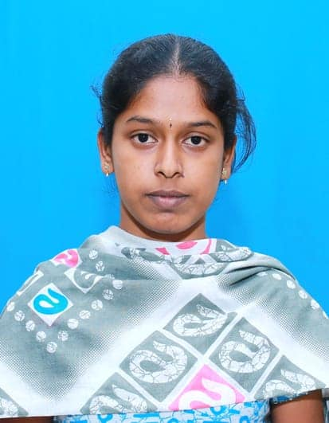

KT Telematic Solutions Pvt.Ltd.
I am Parinitha Varshini S, currently working at KTT (KT Telematic Solutions Pvt. Ltd.) as a passionate and detail-oriented professional in the field of technology.With a background in Computer Science and Design, I have a strong interest in web development, networking, and software systems.At KTT, I am gaining hands-on experience in real-time tracking and telematics solutions, enhancing my technical knowledge and problem-solving skills. I am committed to continuous learning and contributing effectively to innovative, technology-driven solutions.
I am Parinitha Varshini S, currently working at KT Telematic Solutions Pvt. Ltd
.
I am passionate about technology, problem-solving, and building practical solutions.
With a background in Computer Science and Design, I continuously explore new tools
and technologies to enhance my skills.
At KTT, I work on real-time tracking and telematics solutions.
This experience has helped me understand networking concepts,
system integration, and real-world technical implementations.
I focus on learning through hands-on practice and teamwork.
I have knowledge in HTML, CSS, JavaScript,React,SQL.
I am also interested in
software testing, networking, and system-level concepts.
I have worked on academic and personal projects including
web development applications.
Machine learning-based
prediction system.
These projects strengthened my logical
thinking and development skills.